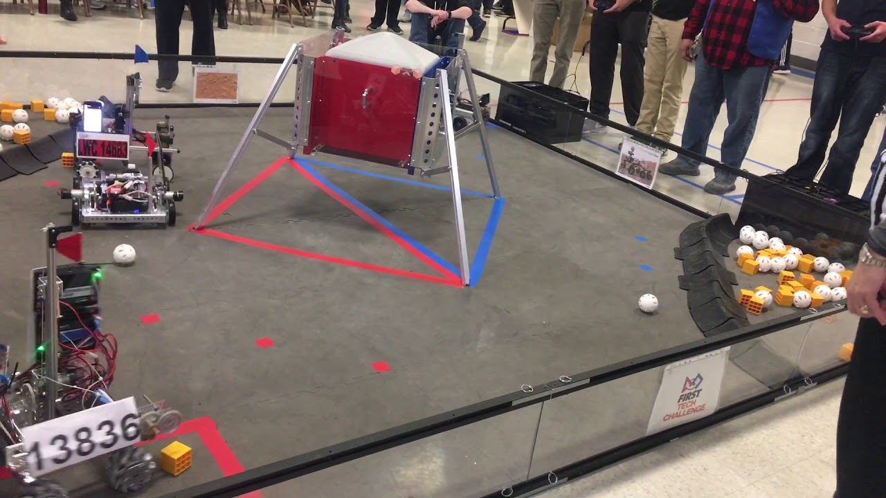
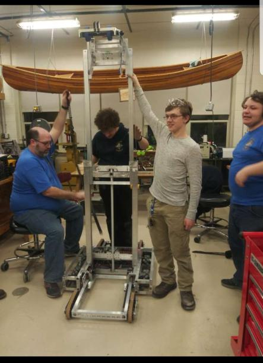

|
This year, I joined the School's FIRST Tech Challenge team, 12566 Aztechs, and we made the robot you can see to the right. there have been a few modifications since this image, but this image is the majority of it. I am very proud of completing the code required to control it. it took me weeks, using desmos to create a pseudo 4d graph, finding points that are required, then the formulas to smoothly transition between them. this took a long time, and there is a paper you can view on the math behind it here. you can also use this link to a p5 example of how it works |
|  |
At the Andover High School Robostorm 4.3 FIRST Tech Challenge Event, our team took 3rd place in qualifications. it was very fun, as i haven't ever done this well in a robotics event, and this event i was expecting to be similar. I was pleasantly suprised when we had very few problems, added code to do better, and we were considered unique and cool. what we did, that very few other teams did, was we could move in all directions really well, and our strategy was to descore the other teams points. you can find the competition details here. |
|  |
i spent a large amount of time this year working on the FIRST Robotics Competition robot for the school robotics team, 157 Aztechs. programming this years robot was very difficult as we had to figure out whether to prioritize robot saftey or driver input. we came up with a very complicated system, where the robot could take inputs from many diffrent controls at once. those inputs use an object with all the info for them to move properly, and then they also have a priority, and then the robot acts on the one with the highest priority. after looking at other matches, it seems like we will do fairly well. |